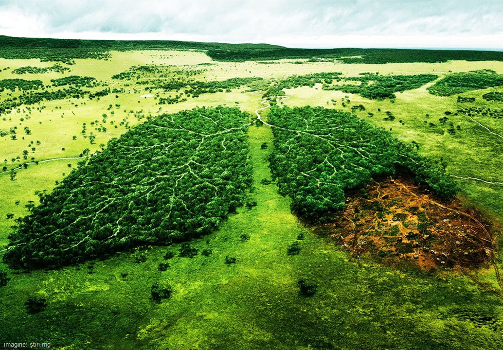
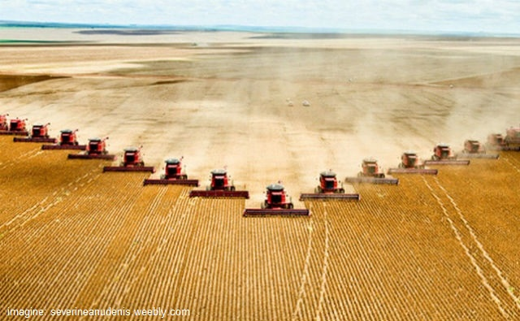
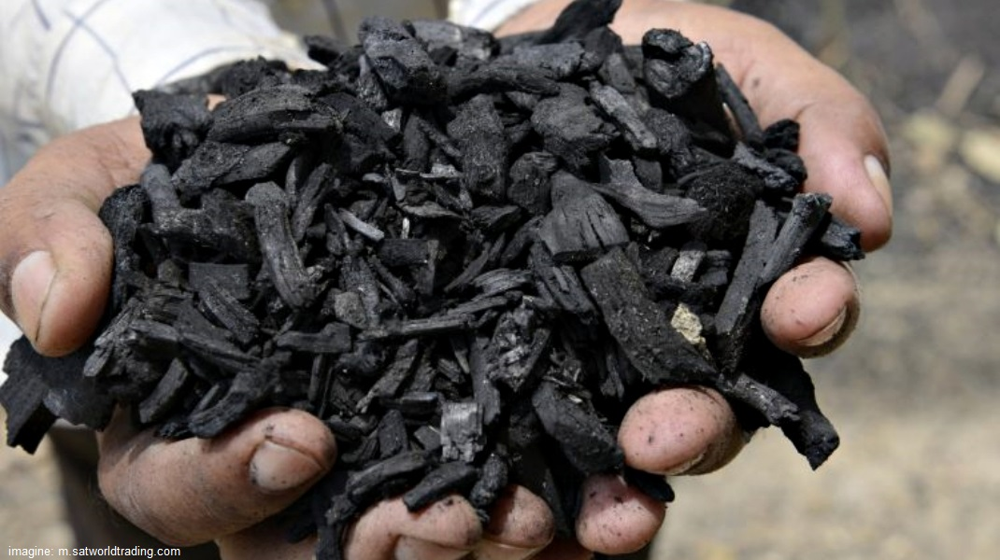
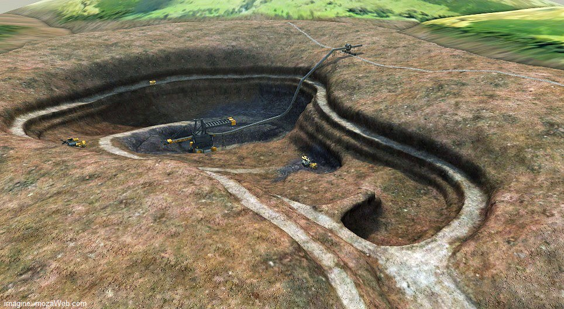
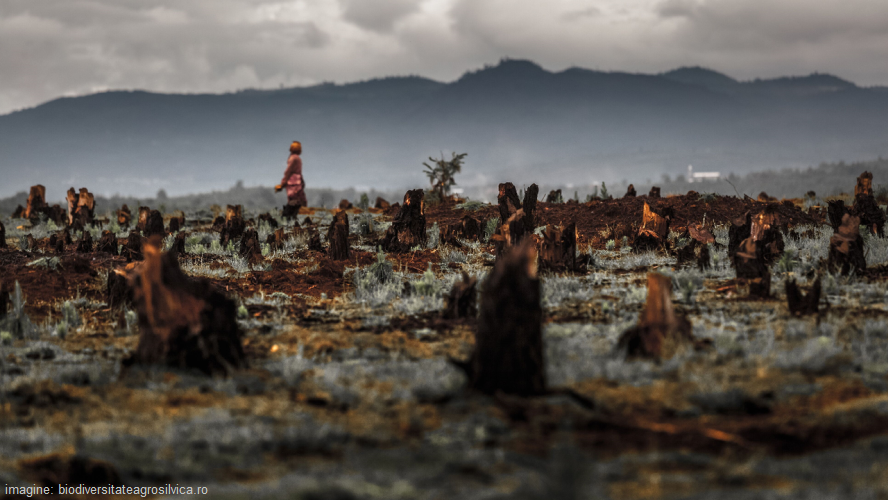
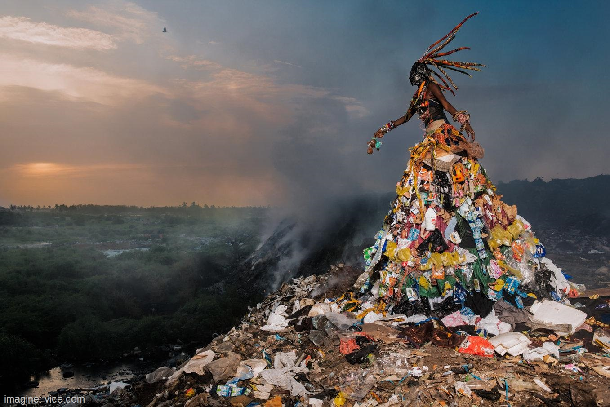
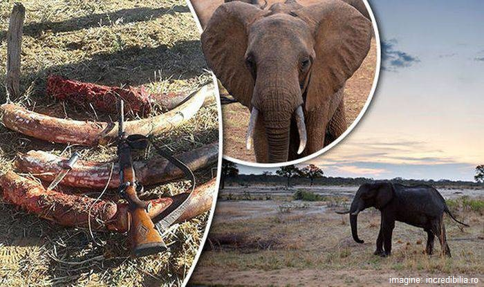
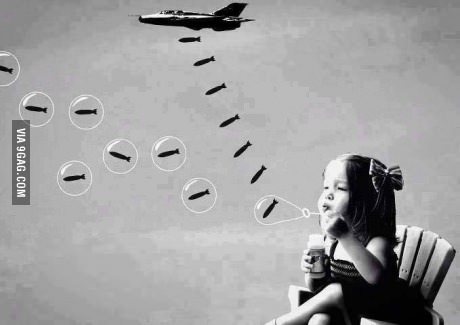

Exploatarea pădurilor joacă un rol important în schimbările climatice. Copacii ajută la reglarea climei prin absorbția CO₂ din atmosferă. Când sunt tăiați, acest efect pozitiv se pierde și carbonul stocat în copaci este eliberat în atmosferă.


O altă cauză a încălzirii globale este agricultura intensivă, nu numai cu animale în continuă creștere, ci și produse de protecție a culturilor și îngrășăminte. La digerarea alimentelor, vitele produc cantități mari de metan, iar îngrășămintele produc emisii de protoxid de azot.

Utilizarea masivă a combustibililor fosili este prima sursă de încălzire globală, deoarece arderea cărbunelui, petrolului și gazului produce dioxid de carbon - cel mai important gaz cu efect de seră din atmosferă.

Viața modernă este foarte dependentă de industria minieră. Mineralele sunt materii prime utilizate în construcții, transportul și producția de mărfuri. De la extracție până la livrare, această piață reprezintă 5% din toate emisiile de gaze cu efect de seră.

În cele din urmă, consumul excesiv joacă, de asemenea, un rol important în schimbările climatice. De fapt, este responsabil pentru supraexploatarea resurselor naturale și a emisiilor din transportul internațional de marfă care contribuie la încălzirea globală.

Metodele de gestionare a deșeurilor precum gropile de gunoi și arderea gunoiului emit gaze cu efect de seră și gaze toxice, inclusiv metan, care sunt eliberate în atmosferă, sol și căile navigabile, contribuind la creșterea efectului de seră.

Braconajul duce la dispariția multor specii și crează un dezechilibru a unor lanțuri trofice. Astfel utilizarea durabilă a tuturor animalelor sălbatice.

Războiul duce doar la distrugeri, poluare, haos. Pentru a trăi într-o lume frumoasă și sănătoasă trebuie să evităm conflictele și să respectăm pe cei din jur.Noi toți suntem oameni, deci trebuie să ne înțelegem și să trăim în pace.